BarbecueNight.com Page 3
The Every Thursday Night Barbecue At Dick Flaharty's
The most recent Thursday, followed by the previous barbecues, for this page.
18 October 2007: What? The report is late? We called the web slave. He said he had been followed home by a lurking suspicion, and was not certain if he should upload the report because so many of the evening's discussions involved endeavors that would not find favor with the authorities at George Bush Central. He even shredded the memory card from his camera, to destroy the visual evidence. We will monitor his wine consumption at the next barbecue's. He may have accumulated too many tannins in those big cabernet sauvignons that had not yet reached their prime but were the only bottles left in the wine closet. Come to think of it, there were a few people there for the first time, and nobody knew them, which may explain why it was a bit more interesting that what we have heard from ourselves so often.
Castner Glacier Caving Report - Last weekend's caving team was fully equipped to get through the deep part of the river and around the corner that stopped all prior caving expeditions at that position deep in that cave. The cheap inner tube raft inflation plan was not fully funded, and resulted in a not fully inflated inner tube raft that was of no value. Undaunted, the guy who drew the short straw front-pointed along the ice wall around the corner, out of sight from the rest of team leisurely sitting on a nice silty beach. Thereupon his front points, somewhere under the water, twisted out due to ah, a technique miscalculation. Curious as to why the rope was floating back toward them, the team members pulled it, and retrieved a fully water-filled set of chest waders with a set of flailing arms and sputtering head. This resulted in the standard emergency glacier river immersion reaction plan. This part of the story may change in regard to the sequence because the story was cold by the time it got to the web slave still apprehensive about that lurking suspicion. Still deep inside the cave, but on a nice river beach vaulted by ice, they stripped the guy darn near naked about the same time he became useless and less than his normal less than coherent. They wrung the water out of his clothes, got him up to survival temperature in an extra coat, stuffed him back in his wet chest waders, and stumbled him back out the cave, with difficulty. At the entrance they stripped him bare bottom naked and got him in a dry set of clothes, then stumbled him to the car where he regained his usual barely tolerable nature.
Another attempt is being planned by the same cave-addled person, with more funding for more air for another inner tube raft. A report will be given.
The Yukon River report from Mike and Ramona described the new cabin being built up or down river from Eagle, back in the trees a ways, on this or that side of the river, out of sight from the feds.
One caving trip, two snow machine trips, another party and a climb were planned. "Where's the ice?", was heard several times. Give these guys a little winter, and they want more.
One of the gourmet food arrangements was so good that it was gone before most of the people knew it showed up. It is okay to suggest BBQnight to outdoor adventurers, but culinary adventurer's are preferred.
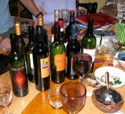
A scheduled guest lecturer reported on the previous weekend's scientific lignitized log expedition to the well known McSecret Creek Bluffs. Six expedition members, selected for their archeological credentials and related experience required for this unique expedition, ventured into the Alaska Range winter hinterlands.
The team assembled at the Dick and John and Karen lodge in the Alaska Range (next three photos) poured over the maps and plans, lavishly poured wine, enjoyed moose, caribou and salmon steaks, too much chocolate, told stories, laughed a lot and generally made a mockery of modern scientific process. The dogs were listening and learning.
The goal was a newly discovered deposit of lignitized wood. "Whole logs", was the rumor brought out by some guy who shows up on occasion. The route through the dense alder in the narrow frozen creek between towering slopes was soon abandoned for the ridge route, still slathered with dense swathes of impenetrable brush. That being the case, the rest of the story may all be lies.
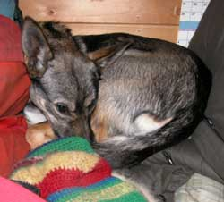 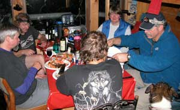
The scientific conclusion was as certain as it was swift. There aint gonna be nobody going there again. The "logs" were some scant slivers, splinters, crumbles and mud dust. The chocolate was consumed. The reputation of the rumor source was again confirmed. Do not believe college graduate students. They practice the rhetorical illusions that their advisors practiced to get their paper degrees from an institution that therefore stagnates its victims with what impressed people impressed with old paper titles and credentials. The lignitized slivers on McSecret Creek are not worth the effort, until another mud slide uncovers more logs.
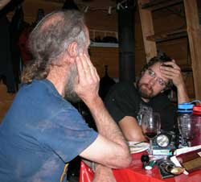
A member of the expedition noted that the team included Travis the New York City Brooklyn artist currently in Alaska professionally advancing his imagery knowledge, of which a modicum was advanced on the expedition to the lodge and lignitized log deposit. He was subsequently dropped off along the road through the Alaska Range, in a snow storm, not far from where the team picked him up, to continue hitch hiking to Valdez. In turn the team learned about surviving in a home-made "apartment" in a previously abandoned pillow factory in NYC, desperately working as a freelance artist creating setting images for the film industry, often for commercials. So the next time you see a dog food commercial filmed in an Alaska Range lodge, it will probably be in a NYC studio, and the floor will look well used because the scuff and wear marks, and effects of spilled wine, will be painted by Travis.
An unscheduled speaker who must not be identified because she is not authorized to speak, because she is a government sort, conveyed knowledge of the new US Passports, from the highest office, to a group of BarbecueNight folks with a better bottle of wine they found in the corner of the kitchen counter. The computer chips in the thick front and back cover of the new passports are embedded with far more data than the government has disclosed to the public. They are readable from 57 feet with standard customs equipment, and 83 feet with equipment authorized for the Department of Homeland Security Gestapo, possibly farther. Data can be added to them any time they pass most units of the same equipment. Anything that any Customs agent, other federal agents or the janitors with common access to said equipment can be downloaded from the chips, or added to the chips.
Major budget excuses of several agencies are predicated on tracking anyone for whom an excuse to track them can be rhetorically fabricated. Excuses are often invented because the budget for the funding source staff personnel is also dependent upon increasing the number of "suspected" anythings to track. US passport holders are gullible pawns in a huge new computer based, government money game dependent upon decreeing increasing numbers of passport holders as security risks or suspected terrorists.
Currently, primary data put on the chips is said to include, in addition to arrest records, specific identification categories for anyone who bought a gun since "Insti-check" and concealed carry permits were initiated, anyone with any drug related charge, anyone with a domestic violence charge or restraining order ever issued against them, anti-war protesters, political activists, previous and current military personnel, and several other more secret, coded categories not revealed to the public and not yet known by the aforementioned person not authorized to speak.
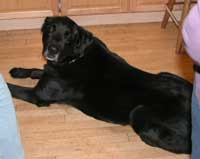
Amusingly, the National Rifle Association supported both those anti-gun rights laws creating the computer chip records. NRA leaders knew the records were INHERENTLY being saved on computers. Identical to the government budget excuse process, NRA derives vast sums of money from gullible members by supporting the progressive rescinding of citizen rights, creating the problem so NRA can more easily get more donations for the illusion of defending those rights. Humans are a gullible lot. They foolishly believe, rather than question, their government and organization leaders.
"The government" is not what the government commonly references. The government is actually millions of common people who easily get jobs as government officials, agents, employees, contractors and sub contractors for security, spy and countless other agencies and programs, including the janitors. Those personnel routinely leave those jobs. They are the same people who are on the street, hired from the street and returning to the street. There are verifiably many more dishonest people per capita with government jobs, than in private enterprise, inherent to the corruption of power. Government has power. A significant number of government personnel derive a second income from selling or using the data they collect on the job. (The same is true of high-turn-over bank tellers gathering government-required information.) Every time a person with a new US passport computer chip walks through an airport or other government building, a few dozen more common people with government jobs get convenient access to an array of the passport holder's personal data, to use to invent agency budget excuses, or sell.
In addition, countless computer equipment and program personnel are selling the equipment and programs to the lucrative black market, inherent to human actions within institutions based on secrecy, deceit, corrupted power and spying on everyone. The genuinely stupid government personnel are those who imply they believe their incessant lies about such things not happening.
So the aforementioned speaker mentioned what many government personnel are said to do to their own new chip passports to protect their privacy from the legions of themselves and the aforementioned. Without altering the printed data, which is illegal, one can carefully hammer the entire cover surface, inside and out, front and back, with a smooth face hammer, against smooth steel or any hard surface. Then with a heat gun, hair dryer or electric stove top, government sorts are said to heat the cover until smoke just starts to come off the paper. They are very careful to remove the heat source the instant smoke appears, so as to not burn the paper. Then they are said to throw it into the micro wave for enough time to get the thing very hot to the touch, but not crispy brown. Any one of those processes will secure your right to privacy against spying and identity theft by government personnel, but a combination of them is said to be more fun.
If one of the resulting temporary bubbles in the cover separates at the edge, a little glue of any sort, squeezed in, will make it look just like the passports used by government sorts.
The passports remain fully valid based on their printed data, as must be the case because computers and programs often fail. The lies about the chip facilitating rapid customs checks are the usual government lies. The chips will increasingly effect more delays as more people are targeted for greater review by the invented security risk data put on their chips. The illusions of efficiency are only creating the government excuses for greater delays with additional budget excuse processes in other parts of the airport and customs programs. If you are in a government process, and in a hurry, you have already made a greater mistake. Nothing in government ever facilitates efficiency, as is obvious. Efficiency is the death of budget excuses. Efficiency is the life of private enterprise.
Many good people died horrible deaths in wars to create and defend your right to privacy, and other rights described in the US Constitution. Government personnel hold those who so sacrificed, in contempt, and are hired because they are too illiterate to understand the dictionary meanings of the plain English words in the Constitution. They are too ignorant to know how to ask the obvious questions created by their own government actions openly violating the Constitution.
Amusingly, the increasing number of people learning about the value of their rights, as soldiers and taxpayers for the increasing number US Presidential ego gratification wars, creates the increasing number of people who are hammering the government's spy chips in the new passports. The intellectually void government enforcement chaps cannot understand the reasoning even if they read these words.
Of course "the government" says that the computer chip passport information does not include all that other private information. That is the same government that said Saddam Hussein had weapons of mass destruction, that we were winning the wars in Vietnam, Laos, Cambodia, Somalia, Iraq and Afghanistan, and that the government is here to help you. Fools believe any government person of any government in human history. Government functions on power, and against reasoning. Power corrupts. Reasoning advances the human phenomenon.
Because the writer of these words, and others of the group were once government sorts, we recognized the truths offered by the unscheduled speaker.
If you do not recognize George Bush as a sufficient example, you cannot understand these words anyway.
With the US government secrecy, spying, secret renditions to secret foreign torture prisons, and denials of citizen rights obviously increasing, and government denials of inherently resulting corruption becoming incessant, any government denials of the forgoing, like all government denials of what government is obviously doing, further verifies its existence.
That was all much to the amusement of the BBQnight crowd who applauded robustly and cheered without missing a single pour of wine.
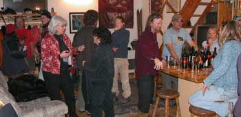
Therein yet again the eclectic BBQnight.com crowd illuminated the essence of Fairbanks Alaska, and certain other obscure places in the universe.
4 October: (Hey photo guy, tell the photo guy to email the photos fer good grief sakes.)The evening's topic for intellectual discourse, featuring a school teacher and somebody else we tolerate, involved the process to use words that hold their common meanings, rather than tangential meanings not conveyed in normal, hasty conversation, which therefore variously conveys intended or not intended concepts. You should have seen that discussion. Yes, seen. There was arm waving, stern looks, pacing back and forth, staring at the ceiling, eye rolling and odd gestures. The flock of dogs followed every waving arm, certain that a piece of food was being cast aside. The conclusion was the plan for this weekend's trip to the Alaska Range cabin, and fossil hunting, where the discussion may advance to the altering of the course of human communication, or something like that.
The food was of profound flavor. The coconut milk moose was a little light on complementary spicing, but the moose cook is a slow learner. He was gently encouraged to spend some money on more spices than just black pepper next time.
The photo guy will email the photos, ah, soon. Heh photo guy, you got the tools and technology, right?
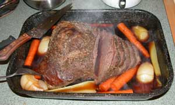
The rumor of Karl the Brit still walking around the world has it that he is actually walking in Eastern Siberia, apparently a process he must endure on occasion to sustain the illusion.
Preparations and plans for snow machining, ice caving, fossil wood gathering, mountain cabin hanging out and the big bottle party were assigned to various committees. Reports will be forthcoming, or lost as usual. High tech tents for kayaking in Southeast Alaska rain conditions were designed and refined, but not made as usual. Preparations for invading Southeast are escalating.
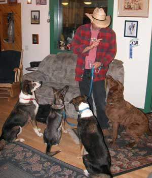 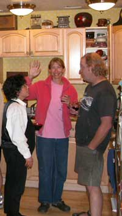 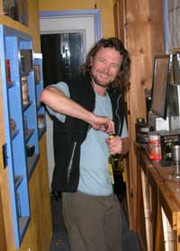
Unusual calcium concretions, or something like that, extracted from a local deep loess deposit, were introduced for modification into potential art forms . A liaison was selected to suggest a collaboration with ProjectNight.net where diamond blades are known to have been present.
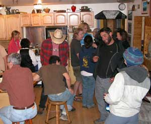
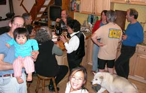
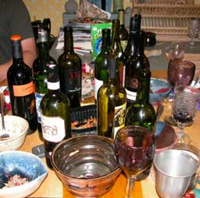
After considerable debate it was decided to mention that at one time there were six, count them, 6, as in a half dozen more than tolerable to rational humans, lawyers present. A survey indicated that no normal person was present, and that the lawyers were outdoor adventurers, therefore effecting no damages, your honor. The lawyers did what lawyers do, harmlessly rattle on among themselves about court cases while the real people were naturally ripping apart the lawyers in amusing conversations involving expressions of reasoning, a concept not recognizable to lawyers after their sophomore year in lie school, ah, law school. When the Americans belatedly recognize the substance of the concept of needing to pay and flatter greedy lawyers to tell literate people what the written laws say or mean, after the lawyers intentionally wrote the laws in complexified Legalese, the lawyers, and therefore judges who are lawyers, may quickly disappear from society, without any expressions of remorse. If a society purports to be under the rule of written law, but the law is written in a manner that a lawyer must explain it in the common language, the society is therefore under the rule of personalities (lawyers), which is repugnant to reasoning and the rule of written law. A lot of people can be fooled a long time to make lawyers rich, but the balance is perfect in all things, and upon the inescapable shift, always sooner than some anticipate, the existing lawyers may pay for all their predecessors, a very high debt, perhaps not unlike the French aristocracy who were as oblivious as lawyers.
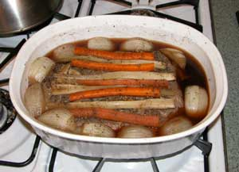
As to the matter of the 20th, a barbecue moose that was gathered on the aforementioned expedition was still being processed on the web slave's kitchen counter. He arrived with an array of lame excuses for bringing only a baked dish of moose meat and onions with some top decoration vegis, instead of a slab of moose for the grill. That left the grill with a flock of chicken legs that outran the chickens but got caught in a chicken leg trap cleverly set at the local grocery place. An oversize zuchinni, common to the end of garden season in Fairbanks, had been given to several people who passed it on until it got to the BBQnight grill.
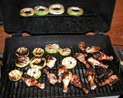 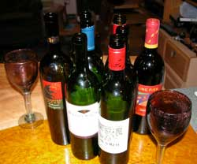
That's it. Homeland Security Gestapo are monitoring this website so the Iranian bombing schedule and subsequent bleeding of the American taxpayers cannot be discussed until after October 21st 11:AM local time.
The moose story is on AlaskaStories.com and in the freezer.
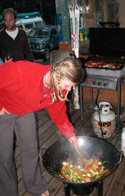
30 August: Fer good grief sakes the universe of conversation was traversed faster and farther than the speed of concepts. That is fast and far.
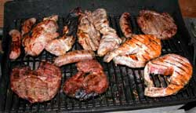
Moose, Chitina King Salmon and some other animals under the errant eye of the Grillmeister. The salads and vegis were classic Fairbanks summer. The wine was the same.
Only one corner of the deck traversed glaciers, virgin mountain routes, Keith Eckelmier, Fred Becky, John Tarver, Gee Lacelle, John Garvy, John Waterman and their mountaineering ilk. Mountain climbing stories created from Dall sheep hunts. Trident glacier and Mt. Moffit. Alpine tundra ponds for freezing skinny dipping. Extreme bicycling. 50 caliber rifles. Kayaks loaded super heavy. Chena River log jams eating kayaks. Wine. Chitina. Government idiocy and Senator Larry' Craig's recent routine representation of US congressmen and the nature of his supporters. The Barrow Alaska airport runway upgrade that exemplifies Alaska government projects. Brio and Suka cruising the floor food zone. Who holds the paid duty to teach the English language sufficiently to preclude the acceptance of the glaring lies of government sorts whose words consistently contradict their dictionary meanings. The weight and balance of log peeling draw knives. Chocolate. The future verifiably known today. The grading of the famous Iniakuk Road potholes. And four bizarre thoughts.
That was at only one corner of the deck, before people drifted inside.
If anyone is in contact with Fred Becky, tell him that the Fairbanks climbers said, Hi, and he is always welcome at the new AlaskanAlpineClub.org headquarters. So are all other climbers. Hey, who ate all the chocolate?
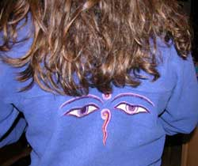
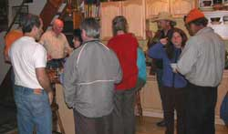
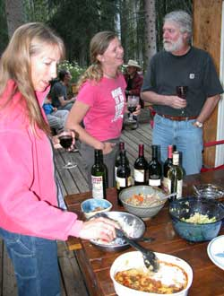
23 August: Ilo's tamale pie casserole complemented the other gourmet fare.
The Kazakstanian Horse Rider's hat granted the wearer authority to tell any horse riding stories from anywhere in the world throughout history. So did the wine.
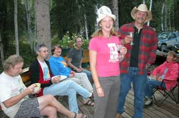
Oh yes, Dick's greenhouse, out from the deck a bit, where the fresh garden vegis are protected from moose by what were among the most expensive skis of their day, before they became last year's model and showed up at The Mall (dumpsters). Moose easily go through most fences to get to gardens, but the ski fence has so far done well. The large pile of other skis is not far away. No few climbers and adventurers who show up and need skis, rummage trough the pile for the finest in glacier transportation. You can match them by color, length, brand, bindings or other priorities.
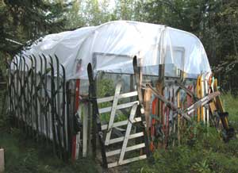
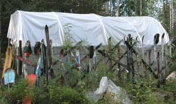
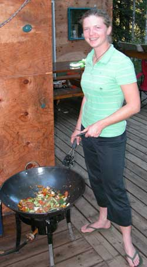
16 August: A bit of a laid back quiet evening, started slow, discussed wildlife management in New Zealand, a few more people showed up, discussions drifted slaunchwise, and we retired early for cause in various adventures on the morrow.
That is Danielle at the deck wok, doing the fresh garden vegi thing. That is also her at the exit of the Castner Glacier cave, on one of the summer trips, with some other BBQnight sorts. You can check the local New Zealand Netherlands perspective at www.muznpi.blogspot.com.
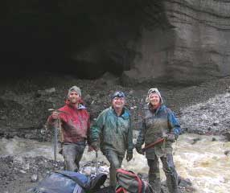
Some fresh Caribou showed up for the grill. Odd scraps of meat from the middle of the meat cutting endeavor. Something else with rib bones was enjoyed.
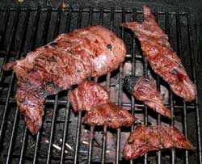 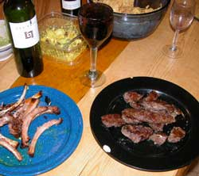
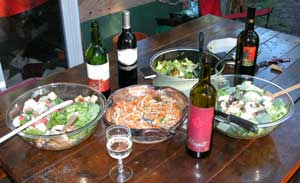
8 August 2007: Magito Cabernet, flower salad, luscious garden fresh vegi dishes, fresh Copper River Red Salmon and the usual suspects. The garden is near the deck, in the greenhouse made with a moose-proof ski fence.
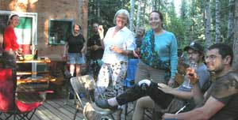
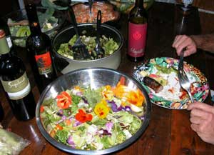
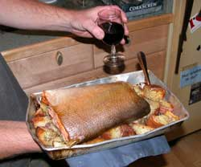
There was preparation for caribou hunting discussed.
There was discussion of things New Zealand, Netherlands, Montana and the depths of the Castner Glacier. A couple other planets were palientologically compared, in another solar system.
Page 4 October 07 ---- December
07
Page 5 January 08 ---- February 08
Page 6 February 08 --- March 08
Page 7 March 08 ------ September 08
Page 8 September 08 - December 08
Page 9 December 08 -- May 10
Page 10 September 10 - Present
Page 1 November 06 - April 07
Page 2 May 07 -------- August 07
Links